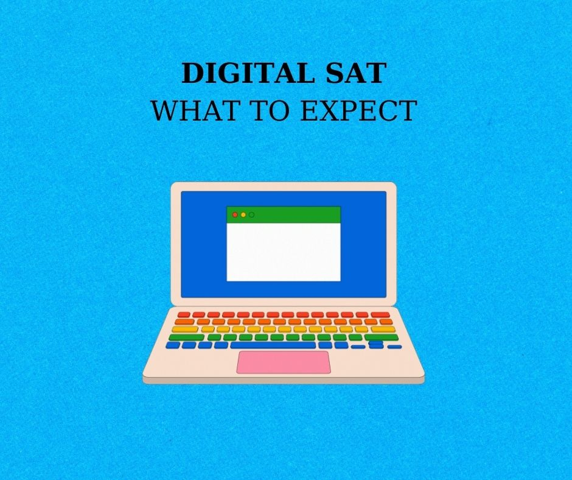

WHAT TO EXPECT ON MARCH 2023 DIGITAL SAT TEST
Đây là lần thi digital SAT đầu tiên ở Việt Nam nên chắc chắn sẽ làm nhiều người bỡ ngỡ. Với các bạn lớp 12 mà thi SAT để đi du học hoặc xét tuyển đại học thì chắc phải sau hôm 16/12 biết điểm, nếu chưa đạt aim, thì mới bắt đầu tìm hiểu về dSAT. Còn các em lớp 10-11 hoặc các anh chị đại học dự định thi dSAT từ lâu thì có thể đã tìm hiểu kỹ hơn. Bài viết này sẽ tổng hợp những thông tin hiện tại ta biết về dSAT và chia sẻ lời khuyên (mình thi đợt t12 vừa rồi được 1480 tuy kph 1500 nma sau 8 tháng ôn SAT thì mình cx có kiến thức kha khá về việc cập nhật resource với thông tin ở đâu. Mình thì chưa chắc sẽ thi lại trong 3 đợt tới vì dù sao mình cũng đủ điểm r nma mình khá hứng thú với dSAT nên mới tìm hiểu).
I. What will change?
1. Test date
Vâng, international chúng ta sẽ có 7 test date như bên Mỹ, nhiều cơ hội cho mọi người thi hơn.
2. Format
- Như tên gọi thì mọi người sẽ làm dSAT trên laptop hoặc tablet của bản thân tự chuẩn bị hoặc có thể yêu cầu thiết bị từ CB tại điểm thi (chứ kph thi ở nhà). Điều này khá có lợi vì nó sẽ tạo ra môi trường làm bài quen thuộc cho thí sinh.
- So với sat cũ phải thi trong 3 tiếng rưỡi tính cả thời gian nghỉ thì dSAT sẽ chỉ thi trong 2 tiếng 14 phút nhẹ nhàng hơn kha khá.
- Phần reading và writing bây giờ sẽ được gộp thánh một phần dài 64 phút chia 2 module, mỗi module 27 câu làm trong 32 phút. Module 1 sẽ bao gồm cả câu dễ, trung bình với khó nma sang module 2 thì CB sẽ chọn câu hỏi cho mình dựa trên performance của mình ở module 1.
- Phần math tổng 44 câu làm trong 70 phút chia 2 module, mỗi module 22 câu làm trong 35 phút.
- Thí sinh vx có thể review câu hỏi trong cùng 1 module, đồng hồ bấm ngược, máy tính sẽ được incorporated vào trong app thi. Thí sinh cx được phát giấy nháp để làm bài.
- Điểm thì vẫn được tính trên thang 400-1600.
3. Kiến thức
- Về phần math thì kiến thức hầu như giữ nguyên, mọi người hoàn toàn có thể sử dụng các sách toán cũ để ôn luyện, trong các bài tới mình sẽ chia sẻ các sách toán mình ôn để đc 800 sat math nhé. Phần math ở digital khả năng đạt 800 sẽ khó hơn khi mà ở module 2 số lượng câu khó chiếm 50%, mọi người nên tập giải các câu hard mặc dù cái hard của CB có thể là trung bình với hs vn mình.
- Phần reading và writing thì CB vẫn cố giữ lại những kiến thức trọng tâm nma dạng câu hỏi thì đổi đi, nhất là phần reading giờ chỉ là các đoạn văn ngắn và có thêm câu hỏi về thơ. Writing vẫn giữ lại một vài kién thức từ sat cũ nên có thể dùng sách cũ đc nma phải chọn lọc, chú ý phần punctuation.
II. Lời khuyên
- Hiện tại mình vẫn đang làm nốt 4 test từ CB để có thể hiểu hơn về dSAT nên mình khuyên mọi người là đừng làm hết 4 đề này vội, làm 1-2 đề xong r lên khan academy để practice, mặc dù trên khan tài liệu cx ít. Tình trạng tài liệu cho reading rất khan hiếm nên mng hay tiết kiệm và học thật kỹ 1-2 đề đầu của CB, đọc cả giải thích của câu mình làm đúng. Còn 2 đề còn lại để dành đến tầm tháng 1 tháng 2 năm sau rồi làm. Thời gian này có lẽ các bạn nên làm lại các phần writing của sat cũ để đảm bảo đúng 100% writing, curve sẽ rất harsh vì số lượng câu hỏi ít đi.
- Tập làm trên máy tính dùng app bluebook, dù sao khi đi thi các bạn cx sẽ dùng laptop hoặc tablet của bản thân thì làm quen với nó đi.
- Phần writing có thể dùng lại sách như kiểu panda wrting hoặc ies wrting, chú ý phần punctuation
- Phần reading thì với tài liệu hiện tại thì các bạn nên luyện đọc tiếng anh ngoài nhiều vào, các bài báo khoa học (ở AAAS), các tác phẩm văn học (tuỳ sở thích các bạn, chỉ cần kph truyện tranh mà là truyện chữ). Bình thường nếu là SAT cũ mình sẽ ko recommend cách này vì nó ko trực tiếp giúp các bạn làm SAT tốt hơn mà mình sẽ khuyên làm real test nma trong thời buổi tài liệu khan hiếm như hiện nay thì đây là giải pháp tạm thời giúp các bạn làm quen với việc đọc tiếng anh.
- Phần math các bạn hãy ôn thật kỹ và luyện thật nhiều câu mức độ hard để chuẩn bị cho dạng mới.
- Với những bạn cần đi học thì mình có thể suggest (mình ko qcao, tất cả là từ trải nghiệm của mình) Vietaccepted (học phí theo mình thấy là rẻ so vs mặt bằng chung), cô Hoa Lê (người từng dạy mình), thầy Trung T Le (bạn mình feedback tốt).
- Và hiển nhiên mình lập page này ra là để chia sẻ giúp đỡ nên nếu bạn nào có thêm câu hỏi về cách làm bài thì cứ ib page mình sẽ cố giải đáp.